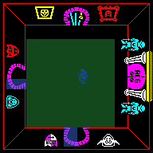
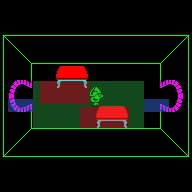
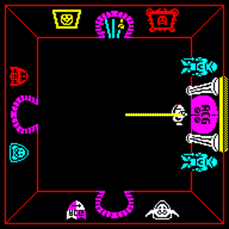
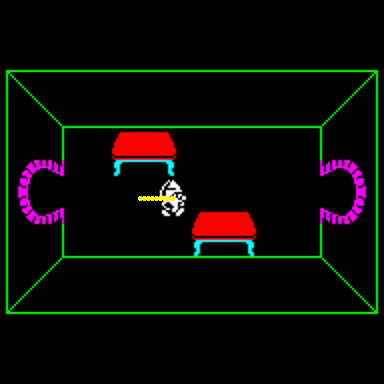
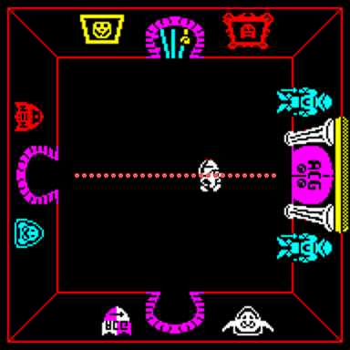

| How the player moves and collides |
The player moves once a frame, on the 50Hz tick, whatever else is happening; creatures move once a pass of the main loop (see the monsters). There are no collision masks or maps. The player may step anywhere inside the room's walk rectangle; a step outside it is allowed only into an open doorway's box, and a step into a table's box is refused. Everything else -- being caught, shot, picking up, eating, going through a door -- is a distance test. This page takes each in turn and then runs a set of situations through the game's own code in SkoolKit's simulator.
UPDATE_KNIGHT, UPDATE_WIZARD and UPDATE_SERF run once a frame from FRAME_TICK, for sprites $01-$10, $11-$20 and $21-$30. Each loads BC, DE and HL and calls MOVE_PLAYER; those are the only numbers that differ between the three. The values, read from each handler's first three instructions, and what a run of each did -- in room $00 at the start of a game, W held for eight frames and let go, creatures kept out:
| Character | Handler | Step (B) | Decay (E) | HL | First frame | Coast after release (px) |
|---|---|---|---|---|---|---|
| knight | UPDATE_KNIGHT | $20 | 3 | $0707 | 2 | 5 |
| wizard | UPDATE_WIZARD | $20 | 32 | $2020 | 2 | 0 |
| serf | UPDATE_SERF | $20 | 1 | $0707 | 2 | 16 |
MOVE_PLAYER reads the controls (READ_CONTROLS) into a wanted change of 32 on each axis, lets the heading in +$06 and +$07 fall towards zero by the character's decay (DECAY_HEADING), adds the change and clamps it to 32 (STEER), and turns the heading into a step by dividing by sixteen (SCALE_SIGNED): 32 is two pixels, 16-31 one, less than 16 none. So all three reach full speed, two pixels a frame, on the first frame a key is held; they differ only in how they stop. Let go, the heading falls by the decay each frame: the wizard's 32 stops him dead, the knight's 3 lets him slide five pixels, the serf's 1 sixteen. The pixels moved on each frame after release, measured:
| Frame after release | 1 | 2 | 3 | 4 | 5 | 6 | 7 | 8 | 9 | 10 | 11 | 12 | 13 | 14 | 15 | 16 | 17 | 18 |
|---|---|---|---|---|---|---|---|---|---|---|---|---|---|---|---|---|---|---|
| knight | 1 | 1 | 1 | 1 | 1 | 0 | 0 | 0 | 0 | 0 | 0 | 0 | 0 | 0 | 0 | 0 | 0 | 0 |
| wizard | 0 | 0 | 0 | 0 | 0 | 0 | 0 | 0 | 0 | 0 | 0 | 0 | 0 | 0 | 0 | 0 | 0 | 0 |
| serf | 1 | 1 | 1 | 1 | 1 | 1 | 1 | 1 | 1 | 1 | 1 | 1 | 1 | 1 | 1 | 1 | 0 | 0 |
These are exactly what DECAY_HEADING and SCALE_SIGNED give when worked through by hand from a heading of 32. The HL each handler passes is pushed and popped by MOVE_PLAYER and never used; STEER clamps to the BC value instead.
The picture follows the heading: while moving, on frames when FRAMES AND 3 is zero, the sprite steps through its four walking frames, picks left, right, up or down by the larger of the two headings, and a footstep sounds.
Before the move, MOVE_PLAYER sets bits 4 and 5 of the player's +$02, meaning “do not apply x” and “do not apply y”. Then, for the new x with the old y, and the new y with the old x:
To see the rule whole, the game was asked about every pixel of the play area: the player put there, bit 4 set, and the two tests called with a step of nothing, exactly as MOVE_PLAYER calls them. Green is a point inside the rectangle, allowed; blue a point outside it allowed by a doorway's box; red a point inside the rectangle refused by a solid box; uncoloured, refused. The first picture is room $00 at the start of the game; the second room $2A, with its two tables, the player put there to draw it (staged). The points are the player's x and y, his sprite's bottom-left corner: the rectangle's centre, ($58, $68), is where that corner is when a sixteen-pixel figure stands in the middle of the play area.

Room $00: the rectangle is x $21-$8F, y $31-$9F. The locked door (north) and the A.C.G. door (east) are shut, so they add nothing.

Room $2A: the two tables' solid boxes cut into the rectangle.
The boxes behind the pictures, as the records give them (only records with a box of any size are listed):
| Room | Record | x, y | +$06 +$07 | Box | What it does |
|---|---|---|---|---|---|
| $00 | timed door, open | $50, $B7 | $04 $06 | x $50-$60, y $9F-$B7 | a doorway |
| $00 | timed door, open | $08, $6F | $06 $03 | x $08-$20, y $63-$6F | a doorway |
| $00 | cyan door | $50, $1F | $04 $56 | x $50-$60, y $1B-$33 | shut: ignored |
| $00 | A.C.G. door | $98, $7F | $BA $D6 | x $84-$AC, y $5B-$73 | shut: ignored |
| $2A | door | $A0, $6F | $B7 $03 | x $8C-$A8, y $63-$6F | a doorway |
| $2A | door | $08, $6F | $06 $03 | x $08-$20, y $63-$6F | a doorway |
| $2A | table | $38, $57 | $CC $49 | x $28-$58, y $43-$67 | solid |
| $2A | table | $60, $7F | $CC $49 | x $50-$80, y $6B-$8F | solid |
A doorway's box reaches from inside the room out through the wall, so an open door is a channel out of the rectangle to its own trigger box, and a shut door is simply wall. Among the furniture, 22 halves in the template have a box of any size and 127 a box of nothing; the solid ones are all table. CHECK_IN_DOORWAY records in IN_DOORWAY whether the player is outside the rectangle on either axis: no firing from a doorway, and an open timed door will not shut on him.
Creatures do none of this. Their movers step them with STEP_ACTOR, which reverses a velocity that would take them out of the rectangle (the big monsters' a little smaller), and doors and furniture mean nothing to them: they never leave their room.
Everything else is a box round a point:
| Test | Between | Box | Also needs |
|---|---|---|---|
| CHECK_HIT | a creature and the player | |dx| < 12, |dy| < 12 | the same room; the player in play ($01-$30) |
| CHECK_SHOT_HIT | a creature and the weapon | the same | the same room; a weapon in flight |
| NEAR_PLAYER | food, a collectable or a mushroom and the player | the same | nothing: PICK_UP adds its own in-play test, food and mushrooms do not |
| PLAYER_AT_DOOR | a door and the player | 0 ≤ x - door x < C, 0 ≤ door y - y < B, one of them halved across the door | the player in play; the low nibble of his +$02 clear |
The door's C and B come from its handler: $11 each (DOOR), so 17 by 8 in the top or bottom wall and 8 by 17 in a side wall; $20 each for a big door (BIG_DOOR); $18 for a trapdoor; $30 by $20 for the A.C.G. door. Being in play matters: while the player rises or sinks (sprites $66 and $67) nothing can touch him and no door lets him through.
Each row was run in the simulator from the first game's start in room $00 (the knight, creatures kept out, the big five sent away), with only the keys named held -- except where the row says it was staged. The last column is what the code says should happen, worked out before the run.
| Situation | What the game did | What the code predicts |
|---|---|---|
| Holding W (right) from ($60, $68) in room $00, the middle of the room | Two pixels a frame for 23 frames, then x stayed at $8E: the step to $90 fails ALLOW_IF_IN_ROOM (|x - $58| must be below $38) and there is no doorway there. | The rectangle's last x is $8F; from an even start, the last even x below it is $8E. |
| Then W and R together (up and right) against that wall | x stayed at $8E while y went from $68 to $50: each axis is tested alone, so the player slides along the wall. | MOVE_PLAYER tests the new x with the old y and the new y with the old x, and APPLY_HEADING moves only on the axes allowed. |
| Holding W from ($3C, $6B) in room $2A, towards the table at ($60, $7F) (staged: the player put in the room) | Stopped at x $4E, short of the table's box, which starts at x $50: the step to $50 lands in a solid box and TEST_ROOM_BOXES sets the bit back. | The table's box, from its +$06 and +$07: x $50-$80, y $6B-$8F. |
| Holding E (down) from the start, towards room $00's south door (open: a timed door at the time) | After 36 frames the door's handler found the player in its box and ENTER_ROOM put him in room $07 at ($58, $19), heading (0, 32), with 15 in the low nibble of +$02. | The far half's x plus twice the low nibble of its +$02, and y minus twice the high nibble: ($58, $19). SET_ARRIVAL_HEADING gives 32 away from the wall. |
| Then Q and R held (left and up) through the 15 frames of the arrival walk | The player kept walking on, two pixels a frame, from y $1B to $35, the keys ignored; only then did he turn up and left ($50, $29 six frames later). | While the low nibble counts down, DECAY_HEADING does nothing and STEER skips the controls, stepping 2 along the heading's sign; no door can fire either. |
| Holding R (up) under room $00's cyan door in the north wall, no key carried | Stopped at y $32, still in room $00: the door is shut (bit 3 of its +$05), so TEST_ROOM_BOXES ignores its doorway and the rectangle's edge holds. | The rectangle's top is y $31; from an even start the last even y above it is $32. |
| The same, with the cyan key written into the first inventory slot (staged) | Through into room $01 after 37 frames; both halves of the door are now type $02, a plain door. | DOOR_NEEDS_KEY finds the key with FIND_CARRIED, OPEN_DOOR clears bit 3 on both halves, and DOOR_LOCKED_A turns the door into a plain one as the player goes through (the doors). |
| T (fire) held for three frames standing in the south doorway, y $A8 | IN_DOORWAY was 1; the weapon slot stayed empty. The same key in the middle of the room launched sprite $42. | KNIGHT_FIRE (and the wizard's and serf's) returns at once if IN_DOORWAY is set, which CHECK_IN_DOORWAY sets whenever the player is outside the rectangle. |
| The knight walking right and pressing T in the middle of room $00 | The axe flew 47 frames at four pixels a frame, bouncing 2 times off the walls -- standing still for the frame of each bounce -- and vanished. | FIRE_WEAPON gives it 4 a frame along the heading and a lifetime of 48 frames; SPIN_WEAPON reverses a velocity that would leave the rectangle. |

The walk right in room $00: a dot at each frame's position.

The walk into the table in room $2A.

The axe's flight in room $00, a dot a frame.
Fire launches the character's weapon only when the weapon slot, the second half of the player's record at $EA98, is empty and the player is not in a doorway. FIRE_WEAPON gives it four pixels a frame along each axis the heading is non-zero on (or the way the player faces, standing still), the player's room and position, and a lifetime of 48 frames. It is then dispatched every frame like the player; all three weapons end in SPIN_WEAPON, which bounces them off the rectangle's edges with a click and ends them -- erased, with a sound -- when the 48 frames are up, when they have hit something, or at once if the player has left the room.
| Character | Fire routine | Sprites | Picture chosen by | Colour |
|---|---|---|---|---|
| knight | KNIGHT_FIRE | axe, $40-$47 | SPIN_AXE: eight angles, from FRAMES, as it flies | red |
| wizard | WIZARD_FIRE | spell, $34-$37 | SPIN_SPELL: four frames in turn | cyan and white by turns |
| serf | SERF_FIRE | sword, $38-$3F | AIM_SWORD: the one of eight angles its velocity points along | yellow |
What a weapon can hit is on the monsters page: any small creature, none of the big five.
Inferred, or not tried: